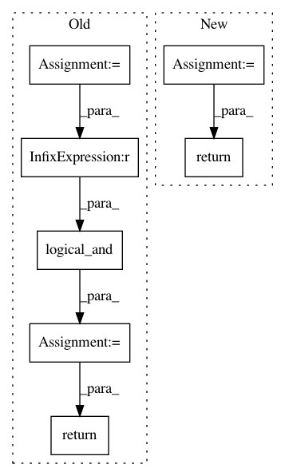

80cfb0e5f889c65a972ebde6c6dae4278b5e28c1,foolbox/attacks/base.py,MinimizationAttack,__call__,#MinimizationAttack#Any#Any#Any#,340
Before Change
assert distances.shape == (N,)
in_limits = ep.stack(
[distances <= epsilon for epsilon in limit_epsilons], axis=0
)
assert in_limits.shape == (K, N)
success = ep.logical_and(in_limits, is_adv)
assert success.shape == (K, N)
xp_ = restore_type(xp)
if was_iterable:
return [xp_] * K, restore_type(success)
else:
return xp_, restore_type(success.squeeze(axis=0))
class FlexibleDistanceMinimizationAttack(MinimizationAttack):
def __init__(self, *, distance: Optional[Distance] = None):
After Change
assert success_.shape == (K, N)
xp_ = restore_type(xp)
xpcs_ = [restore_type(xpc) for xpc in xpcs]
if was_iterable:
return [xp_] * K, xpcs_, restore_type(success)
else:
assert len(xpcs_) == 1
return xp_, xpcs_[0], restore_type(success_.squeeze(axis=0))
class FlexibleDistanceMinimizationAttack(MinimizationAttack):
def __init__(self, *, distance: Optional[Distance] = None):
In pattern: SUPERPATTERN
Frequency: 4
Non-data size: 7
Instances
Project Name: bethgelab/foolbox
Commit Name: 80cfb0e5f889c65a972ebde6c6dae4278b5e28c1
Time: 2020-02-14
Author: git@jonasrauber.de
File Name: foolbox/attacks/base.py
Class Name: MinimizationAttack
Method Name: __call__
Project Name: PyMVPA/PyMVPA
Commit Name: 1c804e98744065a6caf9d3675fee9256de6e5f76
Time: 2012-08-30
Author: nikolaas.oosterhof@unitn.it
File Name: mvpa2/misc/surfing/volgeom.py
Class Name: VolGeom
Method Name: contains_ijk
Project Name: GPflow/GPflowOpt
Commit Name: f886d617da432195768eab0fd33aa3ab3c063cdd
Time: 2017-07-28
Author: ivo.couckuyt@ugent.be
File Name: GPflowOpt/pareto.py
Class Name: Pareto
Method Name: _is_test_required
Project Name: PyMVPA/PyMVPA
Commit Name: 90663bcb608fc6ea068ab88c7e8496d3a417f877
Time: 2012-08-30
Author: nikolaas.oosterhof@unitn.it
File Name: mvpa2/misc/surfing/volgeom.py
Class Name: VolGeom
Method Name: contains_lin